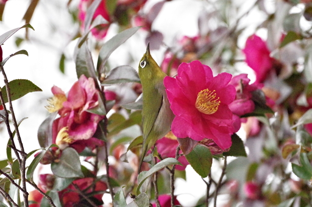
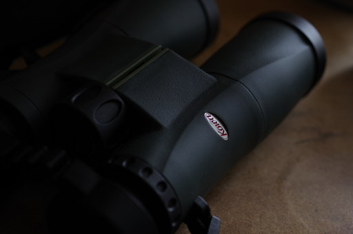
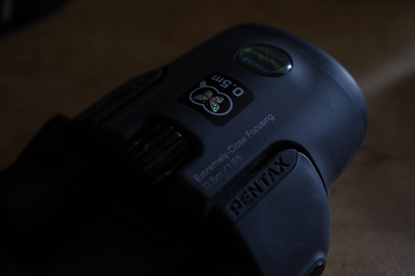

訪問看護で毎週水曜日に看護師さんお二人が来宅されるのだけれど、訪問看護時に散歩も可能ということなので今週からお願いしてみた。
とりあえず最寄りの公園との間を往復することに。
公園に着くとセキレイやシジュウカラの声に混じってメジロくんも。

この写真は別の日に撮ったもの。看護師さんがスマホでメジロを撮ろうとしていたけど、まぁ相手は小さいしサザンカの茂みの中だし葉っぱの緑に対して保護色なので無理だよね。
今日目にした野鳥は以下の通り。
必要ないかとも思ったけど ebird にアプリで送信。アプリは iPhone 用も Android 用もある。野鳥検索アプリの Merlin と併用すれば無敵と言って良いかも。なお Merlin も iPhone 用と Android 用がある。
MNG!! MNG!!

楽しみにしていたコーワ SVⅡ 42-10 がやっと届いた。ストラップを取り付けてピントや視度調整を行って覗いてみた。んん〜ん、ええやん！！
ただ重さがカタログ値で 670g あるので、カメラも一緒に持ち歩くときはこれまで通り PENTAX Papilio 8.5x21 かな。
